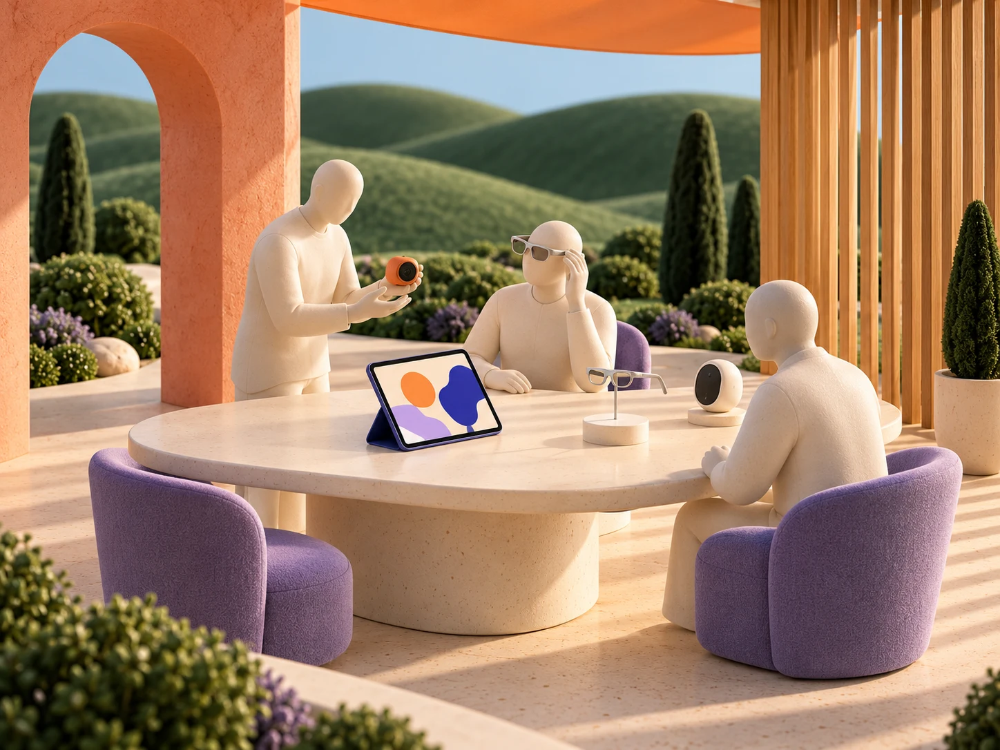

从一个好产品，走向更多真实需求。↓
产品不同，进入市场的方式也不同。
让你的产品，
走进对的场景。
从渠道连接的人群出发，找到值得开始的第一站。
把新品放到人们愿意停留的地方。
03 / 体验零售
从 AI 体验店，到垂直专业门店
先让人上手，
再让人决定。
交互、佩戴与使用感受，亲手试过才有答案。找到与你的产品相配的空间，让演示、答疑与购买自然衔接。
可以从这些方向开始了解经营者示例
深入一个经营方向
找到与你相关的入口。
市场渠道与适配思路供合作讨论；具体入口、意愿与条件需与经营者确认。
把合适的连接，变成可以推进的合作。
从你的产品开始，
跑通一次合作。
一起确定第一站，组织真实体验，
再看清值得继续投入的方向。
从首次合作验证开始，
启动前约定范围、周期与双方投入。

先确定值得开始的第一站
让每个入口，都有选择的理由。
- 一起明确
- 目标买家、优先渠道与进入条件。
- 联野推进
- 整理适配建议，准备接洽与合作切入点。
- 品牌准备
- 产品介绍、可体验版本与价格服务信息。
品牌直接成交与履约产品、价格、交付和售后由品牌掌握。
按实际服务与增量价值收费启动前约定交付、投入与收费方式。
从一次具体合作开始。
下一批买家，
会在哪里遇见你？
合作前，你可能还想了解 ＋
什么阶段适合开始？
有可体验的 Demo，就可以讨论人群与渠道。进入首销前，再确认价格、供货、履约与售后准备。
第一次合作能留下什么？
按约定范围形成渠道优先建议、体验执行安排，以及使用问题、购买顾虑与后续跟进事项。
费用怎样约定？
围绕实际服务与增量价值收费。合作前明确服务范围；涉及成交时，一起约定归因、退款和结算方式。
AI 在其中做什么？
辅助资料整理、渠道比较、内容准备与反馈归纳。产品事实、合作条件和实际执行由双方确认。